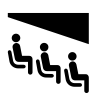
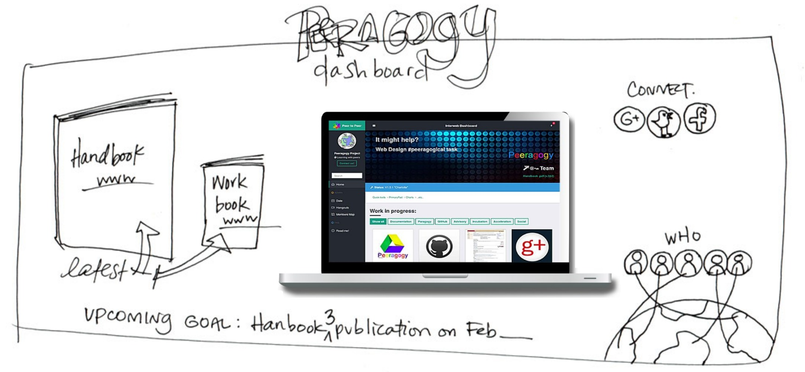

Wrapper
Motivation
This pattern suggests to find at least one person to fill an important role managing the project’s public interface, and keeping participants up to date about activities.
Context
You are part of an active, long-running, and possibly quite complex project with more than a handful of participants. How do you manage?
Forces
Interface: the project shows people how they can use it.
 Familiarity: the leader/follower dichotomy is easy to understand.
Equity: peeragogy aims for fairness.
Problem
In an active project, it can be effectively impossible to stay up to date with all of the details. Not everyone will be able to attend every meeting (see Heartbeat) or read every email. Project participants can easily get lost and drift away. The experience can be much more difficult for Newcomers: joining an existing project can feel like trying to climb aboard a rapidly moving vehicle. Information overload is not the only concern: there is also a problem with missing information. If key skills are not shared, they can quickly become bottlenecks (see Carrying capacity).
 Design for a Peeragogy project dashboard (sketch by Amanda Lyons, prototype by Fabrizio Terzi).
Solution
Someone involved with the project should regularly create a wrap-up summary, distinct from other project communications, that makes current activities comprehensible to people who may not have been following all of the details. In addition, project members should keep other informative resources like the landing page, Roadmap, and documentation up to date. Check empirically to see if they really show interested parties how they can get involved. Building on the idea of a “project dashboard,” we can guide potential contributors to live help; we can then see what questions they ask.1 Wrapper is both a role, and, sometimes, an artifact. Our Handbook’s cover literally wraps up its contents; the collaboratively written chat notes from our weekly Hangouts give a collaboratively-written overview of what was discussed in the meeting. Meetings themselves can be structured to give people a chance to sum up what they’ve accomplished during the week, as well as any problems they are running into. Between meetings, each participant is advised to maintain some sort of “learning log” in the form of a personal Scrapbook, so that outstanding concerns are surfaced and available to discuss.
Rationale
According to the theory proposed by Yochai Benkler, for free/open “commons-based” projects to work, it is important for participants to be able to contribute small pieces, and for the project to have a way to stitch those pieces together [1]. The Wrapper helps perform this integrative stitching function. If you value participation, you may have to do some serious work to facilitate access to process.
Resolution
Well-maintained records chronicle the project’s history; up-to-date documentation makes the project more robust; a coherent look-and-feel offers an accessible interface to the outside world. Regularly circulated summaries can help to engage or re-engage members of a project, and can give an emotional boost to peeragogues who see their contributions and concerns mentioned, giving less engaged participants the familiar experience of “following” someone else’s updates. People will judge from experience whether the project strives for equity or strives to maintain hidden power differentials.
Example 1
There are many data streams around the Wikimedia project. They comprise an elaborate Wrapper function for the project, with components that range from Today’s Featured Article, which appears on the front page of Wikipedia, to formal annual reports from the nonprofit.2,3
Example 2
In-person meetings are just as relevant for contemporary humans as they were a century ago, even though we have learned more about how to assemble on the fly [2]. Getting together for conventions, dance parties, and commencement ceremonies could comprise an important part of the future university’s Wrapper function, even if these events do not always take place in one specific Assembly Hall.
What’s Next in the Peeragogy Project
Let’s make sure we have protocols in place that enable us to share progress, and to revise our “next steps” if people are getting stuck. Let’s improve the interaction design for peeragogy.org so that it’s clear how people can get involved.
References
-
Y. Benkler. 2002. Coase’s Penguin, or Linux and the Nature of the Firm. Yale Law Journal 112: 369.
-
Howard Rheingold. 2007. Smart mobs: The next social revolution. Basic books.